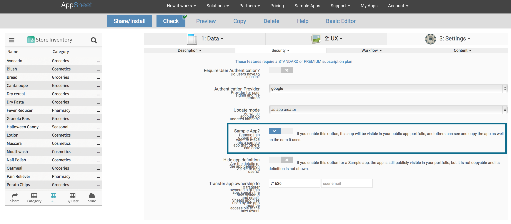

Often, there is a need to show someone else your app's definition. Another common use case is when you want someone else to see your app definition and make suggestions for improvements (eg: when posting questions to the user community). You can do this in two quick steps:
Please be aware that making your app public also means that the data within the app is also visible to a public audience. Do NOT do this if you have confidential data.
In the Advanced Editor>Settings>Security tab, click the 'Sample App?' check box. The app definition now becomes publicly visible via your portfolio page: https://www.appsheet.com/portfolio/<userid>. Or you can simply share/email the browser link to the app editor page.
